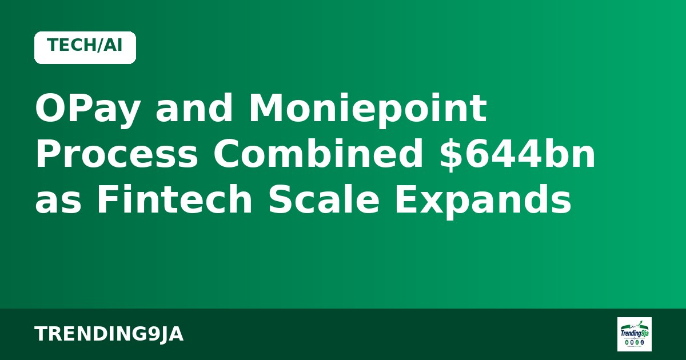
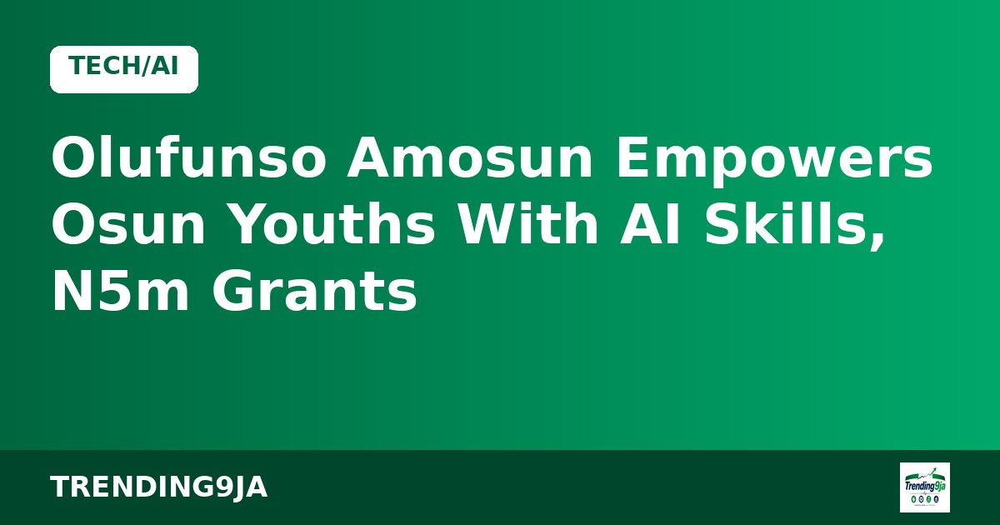

Olufunso Amosun Empowers Osun Youths With AI Skills, N5m Grants
Former Ogun First Lady Olufunso Amosun has trained 70 Osun youths in digital skills and presented N5 million in grants to vulnerable residents during the Edi Moremi Festival.

Nigerian financial technology giants OPay and Moniepoint handled a joint total of $644.85 billion in digital transactions during 2025, according to reporting by TechCabal. The massive figure reflects how deeply both microfinance-licensed institutions have penetrated everyday commerce across the country.
Data reveals that overall electronic settlements in Nigeria exceeded ₦1.2 quadrillion, or roughly $880.51 billion, within the year. The two fintech heavyweights accounted for the bulk of these movements, dividing retail transfers and merchant collections between them.
OPay recorded 62.3 billion payment events valued at $358 billion throughout the period. The platform reported 50.1 million active monthly customers, with each user wallet averaging 209 operations monthly. Its mean transfer size stood at $5.75, pointing towards frequent, lower-value consumer activity. The firm posted $536.25 million in annual revenue, drawing over 88 percent of that money from its Nigerian base despite running footprints in Pakistan, Indonesia, and Egypt.
In contrast, Moniepoint settled 14 billion transfers worth ₦412 trillion, which converted to $286.85 billion at end-of-year rates. Catering to upwards of 20 million merchants and individuals, Moniepoint saw a much larger average transaction size of $20.49, reflecting its grip on store checkouts and business-to-business settlements. The firm also reported around 1.7 million card uses each day.
Both operators leveraged their heavy transaction flow to scale up credit services. OPay issued $938.3 million in fresh Nigerian loans, marking an annual surge of almost 285 percent. Moniepoint also stepped up enterprise financing, providing small commercial ventures with over ₦1 trillion, or about $696.23 million, in credit facilities.
Sources: TechCabal
← More Tech/AI stories
Former Ogun First Lady Olufunso Amosun has trained 70 Osun youths in digital skills and presented N5 million in grants to vulnerable residents during the Edi Moremi Festival.

Tech founders at Moonshot by TechCabal highlighted how broken payment infrastructure hampers African content creators from earning from international audiences.

Former Google director Juliet Ehimuan has urged African tech and creative innovators to focus on owning intellectual property and building scalable enterprises.
Nigeria's trending news, politics and entertainment, straight to your email.
By subscribing you agree to our Privacy Policy. Unsubscribe any time.